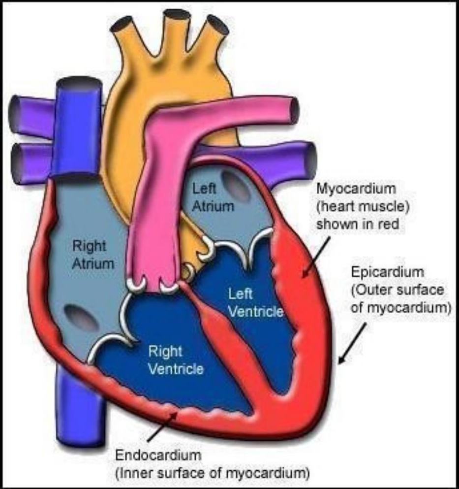

CARDIOVASCULAR DISORDERS
(G. GITARI)
MAIN OBJECTIVE
To promote Health
Prevent Illness
Diagnose and
Manage patients suffering from common cardiovascular disorders
COURSE OUTLINE (CONDITIONS)
- Congestive cardiac failure (CCF)
- Arteriosclerosis
- Atherosclerosis
- Myocardial Infarction (MI)
- Rheumatic Heart Disease (RHD)
- Subacute Bacterial Endocarditis (SBE)
- Acute Bacterial Myocarditis
- Hypertension
- Carotid Artery Disease
- Varicose Veins
- Transient Ischaemic Attacks (TIAs)
Revision - A & P

- Flow of blood through the heart
- Coronary arteries
HEART DISEASE
Heart diseases are a major cause of death but not all kinds are fatal
There are many causes as covered under various conditions
DIAGNOSTIC TESTS
- Electrocardiogram (ECG)
- X-rays
- Heart catheterization
- To determine blood pressures within the heart
- To take blood samples for determining oxygen content in various parts of the heart and the great vessels
- Angiogram
- X-rays using dye to visualize the heart and blood vessels
- Radio isotopes (chemical elements) which
- Emit radiation, given IV and picked by camera
- Aid in visualizing structural defects of the heart and the great vessels
- Echocardiography
- To check structural defects of the heart and vessels using sound
- Phonocardiography
- For validating heart sounds
CONGESTIVE CARDIAC FAILURE (CCF)
Pathophysiology
Heart failure occurs when the amount of blood pumped by the heart is insufficient for the needs of the body
The right ventricle fails to function properly, the right atrium becomes distended leading to stasis / congestion in the venous system
The pressure in the superior and inferior cava rises; the veins in the neck are distended; the liver becomes engorged and the legs become oedematous.
SPECIFIC SYMPTOMS
- Left Sided Failure
- Produces congestion in the lungs and pulmonary oedema
- Cardinal sign - Dyspnoea
- Right Sided Failure
- Produces oedema of the lower part of the body and impaired circulation to the brain
- Cardical sign - Oedema
- Pulmonary Oedema
- Accumulation of fluid within the lung tissue due to left sided failure (cardiac asthma) or an abrupt increase in the workload of the heart.
- Symptoms
- Severe dyspnoea
- Coughing up blood-stained, frothy sputum
- Acute pulmonary oedema - can be fatal within a short period of time. It presents with
- Sudden breathlessness / sense of suffocation
- Cyanosis
- Cold hands / grey appearance (colour of death)
- Distended neck (jugular)veins
- Tachycardia
- Incessant coughing
- Increasing mucoid sputum
- Noisy respiration as frothy, bloody mucus pours into bronchi and trachea
General Signs / Symptoms
- Tachycardia
- Palpitations
- Arrhythmia (irregular pulse)
- Dyspnoea
- Distended abdomen with ascites and discomfort
- Cyanosis
- Distended jugular veins
- Pitting oedema of feet and sacral area
- Chest pain
- Coughing, sometimes with bloody sputum (haemoptysis)
- Nausea and vomiting
- Oliguria
GENERAL MANAGEMENT
AIM: To relieve symptoms and reduce venous return to the heart
- Positioning of the patient and oxygen administration
- To relieve dyspnoea and cyanosis
- Sedation
- to keep patient calm
- Rest
- physical, mental and emotional
- Diet:
- Small, easily digested meals, limited intake of sodium and fluids depending on type of failure
- Care of the skin and turning
- to avoid breakdown during immobility, especially for those with oedema
- Medication
- To decrease heart rate and improve strength of contractions of the heart muscle
- Digoxin (digitalis)
- To relieve oedema and aid elimination of fluid causing pulmonary failure
- Diuretics e.g. Frusemide (Lasix)
- To relieve pain
- Analgesics e.g. Morphine or other
- To decrease heart rate and improve strength of contractions of the heart muscle
- Rehabilitation
- So that the patient can lead a useful, active life within the limitations imposed by the illness
PREVENTION
- Adequate exercise
- Avoidance of
- Obesity
- Tobacco smoking and
- Stresses that overwork the heart
- Early treatment of throat infections to prevent, and monitoring of children for early detection of heart disorders (e.g. RHD)
HOSPITAL MANAGEMENT
On admission
- Complete bed rest in upright position
- Oxygen administration if dyspnoeic or cyanosed
- Total nursing care
- Vital signs (TPR, BP) hourly while dyspnoeic, then gradually to four hourly
- Medication:
- Digitalis (Digoxin)
- 0.125 mg - 0.5 mg or as ordered
- To slow the heart beat (pulse)
- Diuretics
- Frusemide (Lasix)
- 80 mg stat, then 20-40 mg / day
- Ethacrynic acid - a rapidly acting loop diuretic IV (for pulmonary oedema)
- 50 mg - 100 mg stat
- 25 mg / day /PO or
- 0.5 mg - 1 mg / kg IV slowly (single dose - not to exceed 100 mg )
- To increase urinary output and reduce oedema
- Frusemide (Lasix)
- Analgesics for pain
- Morphine 15-30 mg stat or as prescribed
- Potassium chloride (Slow K - 600 mg tabs) - 1-2 tabs to replace loss
- Ripe bananas can also be used
- Digitalis (Digoxin)
- Fluid input and output chart
- Daily weighing to monitor weight reduction after diuretics
- Diet: light, low salt, easily digestible
- Aperient during fluid restriction to stimulate bowel movement
- Turning and prevention of pressure to prevent bedsores because of oedema
- Follow up after discharge
Home Care
- Prolonged rest and light duty
- Light, low salt, high potassium diet (for right sided failure
- Continuation with drugs
- For women (child bearing age), health message on significance of cardiac disease in pregnancy
- Follow up at the cardiac / medical clinic